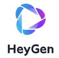
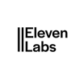

RICA ANIÑON / CREATIVE VIRTUAL ASSISTANT
Your ideas, with
a creative twist.
You build the business. I help it show up — with thoughtful design,
polished video edits, and social content that feels like you.
SOCIAL MEDIA / THE RESULTS
Content people watch.
And pass along.
Good content gives people a reason to stop.
Here’s a closer look at the reach and response
behind the work in my portfolio.
Your next post could start with a simple idea.
Let’s give it a thoughtful edit and a clear story.
01 / SELECTED WORK
A little taste of
what I can create.
A closer look at my editing and design work.
Made to help a message feel clear, polished,
and worth a second look.
IN THE EDITING ROOM
From “I should post this”
to ready to share.
Raw clips are a start. The right cuts, readable captions, and a clear story bring them together.
I help turn your footage into short-form content that feels like your brand — so your best ideas don’t stay in your camera roll.
Let’s put your footage to workDifferent ideas. My creative touch.
Choose a collection. Open any piece.
02 / LESS TO JUGGLE
You don’t need
to do every part.
Your business needs your attention. So does your content.
Let’s make room for both, with creative and everyday support you can hand over.
01Give your ideas a good edit.Short-form video editing
You have the footage and something to say. I bring it together with clean cuts, captions, and pacing for Reels, TikTok, and short videos — ready for your review and next post.
02Stay present, even on your busiest days.Social media support & scheduling
You shouldn’t have to choose between serving your customers and showing up online. I help organize your content calendar, prepare visuals, and schedule approved posts in Meta Business Suite, so posting has a place in your week.
03You’re building an app. Let’s tell its story.Social content for app founders
Between building features and listening to users, social media can slip to the bottom of the list. I can turn your screen recordings, feature updates, and product ideas into short demos, simple explainers, and launch graphics — helping people understand what you’re building and why it matters.
04Make every post feel like you.Canva graphics & visual content
When your visuals feel consistent, your brand feels more put together. I create social graphics, carousels, thumbnails, and posters around your message and brand style, so each piece feels part of the same story.
05Get a little breathing room back.Admin support & simple workflows
The small tasks still take real time. I help with inbox and calendar organization, documents, meeting notes, and task boards in Asana or ClickUp — so you can see what needs you and what’s already moving.
FOR THE PEOPLE BUILDING SOMETHING NEW
You build the app.
I help it connect.
Your app solves a real problem. Your social content should help people see themselves in that story.
I create thoughtful visuals that turn everyday questions into a reason to stop, read, and get to know your brand.
Let’s tell your app’s storyExplore all 9 designsShow featured designs
The final piece is a concept draft and includes its original production note.
A cohesive collection of social graphics and carousel covers.
Designed around the questions the audience is already asking.
03 / THE PERSON BEHIND THE PIXELS
A little structure.
A lot of imagination.
I’m Rica. Creative by instinct.
Organized in the way I bring it all together.
A clip with potential. A message that needs a visual. A good idea sitting in your notes. That’s where I come in.
I bring a creative eye to your content and a practical mind to the work behind it. My Electronics Engineering studies and student leadership experience have taught me to connect the details, keep things organized, and communicate clearly.
So you get someone who cares about how it looks, what it says, and getting it ready to share.
Education & leadership
BS Electronics Engineering · University of Southern Mindanao (in progress)
- Vice President — External, JIECEP USM Chapter
- IECEP SOX Student Chapter Board of Trustees
- PhilHealth Student Advocate, USM
THE TOOLS BEHIND THE WORK
A creative toolkit.
A smoother workday.
From the first idea to the final handoff,
familiar tools that help me bring your work together.
- CanvaVisual design
- CapCutVideo editing
 ChatGPTIdeas & drafting
ChatGPTIdeas & drafting- Google GeminiResearch & ideas

HeyGenAI video
ElevenLabsVoice & audio Meta Business SuiteSocial scheduling
Meta Business SuiteSocial scheduling- AsanaProject coordination
- ClickUpTask management
- Google WorkspaceEveryday collaboration
 GmailInbox organization
GmailInbox organization Google DriveFiles & handoffs
Google DriveFiles & handoffs
04 / LET’S MAKE ROOM FOR WHAT’S NEXT
Have an idea?
Let’s make
something of it.
Tell me what you’re building, what keeps getting pushed back, and where you could use an extra pair of hands. We’ll start there.
Say hello on WhatsApp